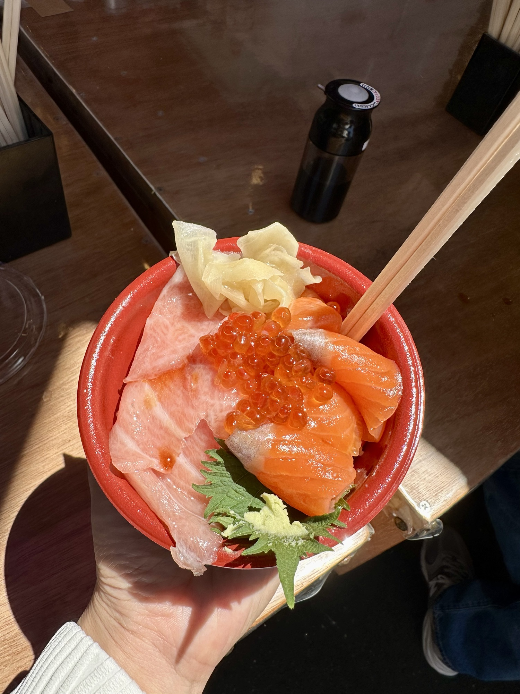
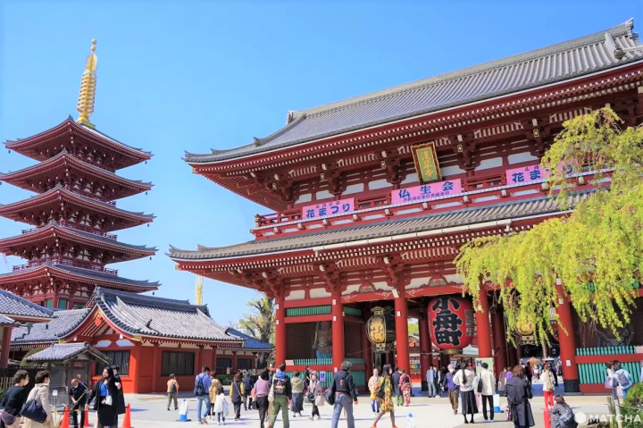
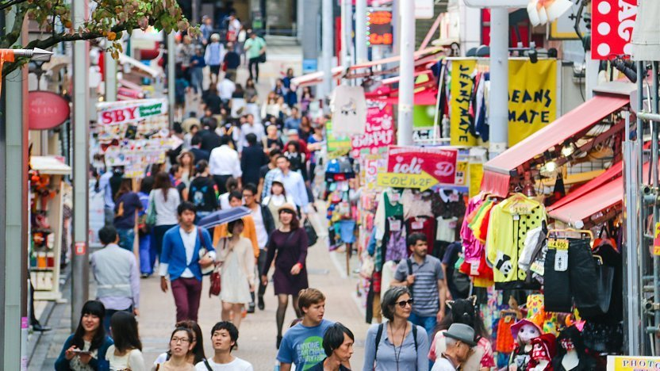
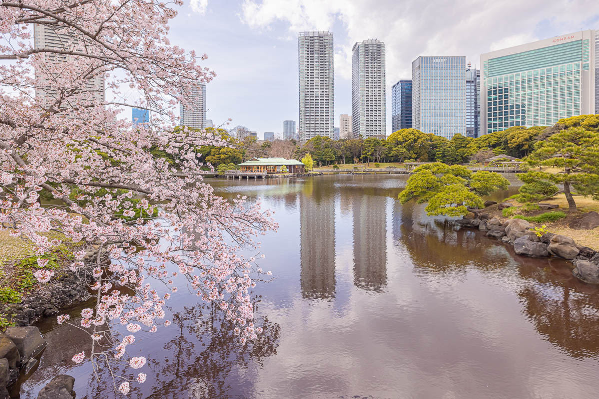
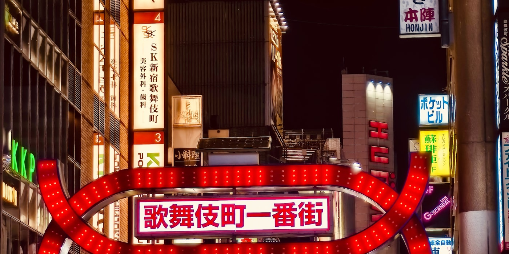

東京
Director's Shot List · 2 Days · 1 Anchor
TOKYO
WEEKEND
Six booking clocks run independently before you buy flights. The Michelin dinner has the longest lead. Shibuya Sky's sunset slot vanishes in under two minutes. Everything else sequences from those two fixed points.
⬛ Pre-production · Book before you board
● 1–3 months out
FIRST
Booking windows open 1–3 months ahead and vanish within hours. L'Effervescence: free English online. Kagurazaka Ishikawa: Pocket Concierge + 2-month lead.
● 10th of prior month
10:00 JST
Tickets release on the 10th for the following month via Lawson Ticket. ¥1,000. Four daily entry slots. Miss the 10th = miss the museum. [65]
● 31 days out
18:00 JST
Reopens Jun 17, 2026 after renovation. Slots drop 31 days out at exactly 18:00 JST. [63]
● 28 days out
00:00 JST
Vanishes in under 2 minutes at peak season. Open the page at 23:55, refresh at 00:00, checkout in 90 seconds. [54]
● ≥ 2 weeks ahead
ANYTIME
Borderless (Azabudai Hills) from ¥3,800. Planets (Toyosu) from ¥3,200. Both sell out weekends routinely. [53]
● Check dates
JAN / MAY / SEP
2026: Jan 11–25, May 10–24, Sep 13–27. No June basho. Outside windows: morning stable practice only; interpreter required. [39]
DAY 01
SATURDAY

08:00 · SAT ONLY · stalls close by 14:00
TSUKIJI OUTER MARKET
EXT · Chuo-ku · closed Sundays + select Wednesdays
Street breakfast walk. Yamachou (sweet caramelised tamagoyaki) vs Shouro (savoury dashi).
Maguroya Kurogin for tuna cuts — long line, fast moving.
Kitsuneya for horumon-ni if you're brave. The wholesale auction moved to Toyosu; the outer stalls stayed. [25]

09:30 · beat the midday crowds by 70–80%
SENSO-JI ASAKUSA
EXT · Taito-ku · main hall 06:00–17:00; grounds 24h
Tokyo's oldest temple — ~30M visitors/year, but nearly empty at 09:30.
Kaminari-mon gate, 200m Nakamise shopping street, five-story pagoda.
Buildings illuminated until 23:00 — if you have energy after dinner, coming back at night is worth it. [13]

11:00 · chain these two — 4-min JR hop between them
MEIJI SHRINE → HARAJUKU
EXT · Shibuya-ku · then 20-min Cat Street walk to Shibuya
Meiji Jingu: 70-hectare forested shrine, free, opens ~05:00.
Hop the Yamanote one stop to Harajuku: Takeshita Street (130 shops / 350m of kawaii overload), then walk Cat Street south into Shibuya — 20 minutes. [21]
🌃
15:00 · peak crossing volume 15:00–17:00
SHIBUYA CROSSING + SKY
EXT/INT · Shibuya-ku · sunset slot is the money shot
Scramble Crossing street-level first, then up to Shibuya Sky (floor 46) for the bird's-eye panorama at sunset.
¥2,500 online vs ¥3,000 counter (¥3,700 if buying after 15:00).
Pick Shibuya Sky or Skytree — not both. Shibuya Sky wins for the Crossing money shot. [7]
★
19:00 · the anchor — everything else pivots around this
MICHELIN 3-STAR DINNER
INT · see restaurant survey · 12 eligible venues
Easiest to book independently: L'Effervescence (free English online, vegetarian-friendly, six straight stars) or SÉZANNE (¥101,200, Four Seasons concierge channel).
Most quintessentially Tokyo: Kagurazaka Ishikawa — 18-year streak, old-Edo alley setting, but Pocket Concierge + 2-month lead required.
⚠ SÉZANNE changed head chefs March 31, 2026; any review before April describes a different kitchen.
DAY 02
SUNDAY
Route A — Full Tokyo day
Route B — Day trip swap

09:00 · Route A · venue opens 08:30
TEAMLAB BORDERLESS
INT · Azabudai Hills B1 · Minato-ku · reopened Feb 2024
Immersive digital art — Borderless at Azabudai Hills from ¥3,800.
The alternative is Planets in Toyosu (from ¥3,200, more intimate wading-pool format).
Both sell out weekends. Book ≥ 2 weeks ahead; rainy June Sundays make this the ideal weather-proof anchor. [53]

13:00 · Route A · after teamLab
HAMARIKYU GARDEN + TEA
EXT · Shiodome · 09:00–17:00 · ¥300
Tidal seawater pond with the Tokyo skyline as backdrop.
Matcha at Nakajima-no-ochaya teahouse: ¥500 plain or ¥1,000 with wagashi.
10-min walk brings you to Ginza pedestrian zone (open Sun noon–18:00). [14]

16:00 · Route A · pick one evening finish
EVENING CHOICE
Three alternatives · all walk-up
Yanaka — pre-war Edo streetscape intact; ~170m shotengai with ~70 shops; nicknamed "Cat Town".
Golden Gai — ~200 micro-bars in Shinjuku; ¥3,000–5,000 for 2 h; 2–3 bars max; cash only; Tue–Thu best. [81]
Nakameguro — lantern-lit Meguro River canal; bars spill onto the riverside path in summer.
Golden Gai — ~200 micro-bars in Shinjuku; ¥3,000–5,000 for 2 h; 2–3 bars max; cash only; Tue–Thu best. [81]
Nakameguro — lantern-lit Meguro River canal; bars spill onto the riverside path in summer.
🚃
08:00 departure · Route B · full day away from the city
DAY TRIP ALTERNATIVES
Trains from Shinjuku or Tokyo Station
Highest reward — Hakone:
Romance Car direct Shinjuku → Hakone-Yumoto ~80 min (+¥1,200 seat). Lake Ashi, ropeway, onsen, Fuji silhouette on clear days. Freepass pays off if you'd otherwise spend over ¥8,000.
Lightest lift — Kamakura: ~1 h from Tokyo Station, ¥940 JR Yokosuka. Great Buddha (Kotoku-in), Hase-dera, Komachi-dori. Best when Saturday is already dense.
Lightest lift — Kamakura: ~1 h from Tokyo Station, ¥940 JR Yokosuka. Great Buddha (Kotoku-in), Hase-dera, Komachi-dori. Best when Saturday is already dense.
📍 Location library · 8 neighborhoods
old Edo · temple town
Senso-ji + Nakamise; rickshaws; Kappabashi kitchen street
Early AM or post-sunset
🛍️
upmarket retail · Michelin
Chuo Dori pedestrian zone; Mitsukoshi depachika; Isetan B1 best-in-Tokyo food hall
Sat/Sun 12:00–18:00 (pedestrian)
🌃
density · night energy
Free TMG 45F observatory; Kabukicho; Omoide Yokocho; Golden Gai
Evening into late night
kawaii teens · luxury avenue
Takeshita Street (130 shops); Omotesando boutiques; Cat Street to Shibuya
Any; Sun 09:00 for empty photos
⚡
otaku capital · electronics
Yodobashi Akiba; Mandarake; Super Potato; arcades; maid cafes
Sun 13:00–18:00 (pedestrian)
🎨
art triangle · nightlife (with caution)
Mori Art Museum 52F; National Art Center; Suntory — avoid the touts
Day for art; night with care
chic locals · lanterns · canal
T-Site (Tsutaya Books); Meguro River lantern walk; bars riverside in summer
Golden hour onward
tidal garden · tea · calm
Seawater tidal pond; Nakajima teahouse matcha ¥500–1,000; near Ginza
09:00–17:00 daily
⚠ Production notes · scheduling gotchas
Imperial Palace East Gardens
Closed every Monday and Friday. Your Saturday–Sunday weekend window is fine; a Friday arrival day is not. [2]
Tsukiji outer market
Closed Sundays and select Wednesdays. Always Saturday morning. Most stalls shut by 14:00. [25]
Shinjuku Gyoen
Closed Mondays. If extending to Monday, use Hamarikyu (open daily) or Rikugien instead. [36]
No June Sumo
2026 Tokyo basho: Jan 11–25, May 10–24, Sep 13–27. Nothing in June. Substitute: morning stable practice (asageiko) — requires interpreter contact. [39]
Shibuya Sky sunset slots
Release exactly 28 days out at 00:00 JST. Disappear in under 2 minutes at peak season. Set a calendar alarm. ¥2,500 online vs ¥3,700 at counter after 15:00. [54]
Tokyo City View Sky Deck
Outdoor Sky Deck closed since April 2024. Indoor 52F partially closed in 2026. Choose Shibuya Sky or Skytree for an outdoor option instead. [55]
Pokémon Cafe TOKYO
Closed renovation Mar 23 – Jun 16, 2026. Reopens June 17. Reservations drop 31 days out at 18:00 JST. [63]
Ginza pedestrian zone
Chuo Dori traffic-free Sat/Sun noon–18:00 only (until 17:00 Oct–Mar). Weekday mornings: just a busy road. [14]